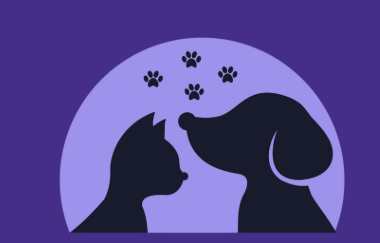

AdoptMePor isso este site traz informações para quem acabou de adotar um pet e quer saber cuidar dele melhor.
Doenças que tinham vacina ou prevenção acabam aparecendo e complicando a vida do animal.
Vermes e pulgas, se não tratados, afetam a saúde do pet e da sua família.
Alimentação errada pode causar obesidade ou desnutrição no animal.
Muita gente só percebe que o pet está doente quando a doença já está avançada, porque não reconhece os sinais.